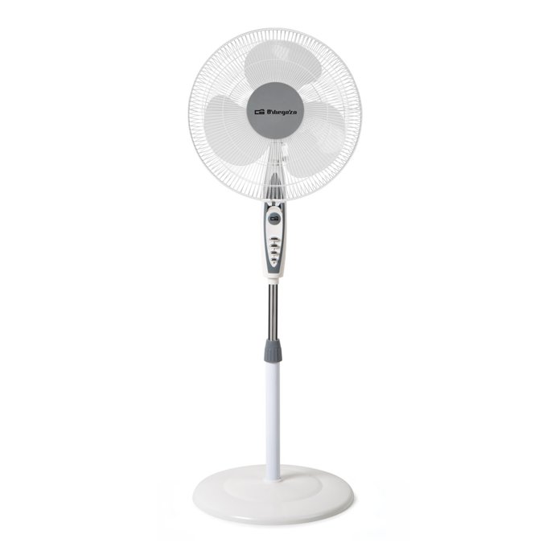

EL TEU APARADOR, AMB CRITERI
Guies de compra.
Tria amb criteri.
Cinc seleccions. Cinc productes per descobrir a cadascuna. Fotos reals, punts forts, punts febles i una nota editorial. El que necessites saber, abans de fer clic.
Explora les seleccions ↓

 Fotos reals.
Fotos reals.Avantatges i inconvenients.
RESPOSTES ABANS DE COMPRAR
Guies per decidir millor
 GUIA DE COMPRA
GUIA DE COMPRAKindle o Paperwhite: quin lector triar per llegir?
Compara Kindle i Paperwhite de 2024: pantalla de 6 o 7 polzades, llum càlida, mida i usos. Tria segons com llegeixes, sense proves inventades.
Llegeix la guia →GUIA DE COMPRASSD extern d’1 TB o 2 TB: com triar capacitat i USB
Guia per triar un SSD extern d’1 TB o 2 TB: calcula l’espai que necessites, revisa el port USB i compara el cost per TB abans de comprar.
Llegeix la guia →GUIA DE COMPRATapo C210 sense subscripció: microSD, núvol i Wi-Fi
Què cal revisar per usar una Tapo C210 sense quota: gravació local amb microSD, diferències amb Tapo Care i compatibilitat Wi-Fi de 2,4 GHz.
Llegeix la guia →EXPLORA AL TEU RITME
Què tens al cap?
Cada selecció, una pàgina per descobrir.

Electrònica
Streaming, vigilància i energia per al dia a dia.
Explora els 5 productes →
Llar i cuina
Organització, conservació i confort per a casa.
Explora els 5 productes →Dispositius Amazon
Lectors electrònics, streaming i so connectat.
Explora els 5 productes →
Bellesa
Cinc productes per explorar la teva rutina personal.
Explora els 5 productes →SSD externs
Emmagatzematge portàtil per a arxius, projectes i còpies.
Explora els 5 productes →COMPRA AMB CONTEXT
Popular no sempre
vol dir millor per a tu.
Les llistes de vendes són un punt de partida. La compatibilitat, l’ús i el que ja tens a casa són el que acaba important.
D’on surt aquesta selecció?
Hem seleccionat els cinc primers resultats de les còpies indexades disponibles de cinc llistes d’Amazon.es. No és un top global d’Amazon ni un rànquing verificat d’avui. Les còpies retornades pel cercador es van indexar aproximadament el 2025. No disposem de xifres de vendes.
Què hem comprovat?
Els noms, les característiques bàsiques i els identificadors de les fitxes d’Amazon. Les variants, els venedors, la generació, les existències i el preu poden canviar. Els resums no són proves de laboratori ni opinions de clients. Les valoracions són judicis editorials sobre les prestacions declarades i les seves limitacions.
Hi ha comissions o seguiment?
Els enllaços no inclouen cap codi d’afiliat. Aquesta web no té analítica, formularis, comptes ni galetes pròpies. Amazon aplica la seva política quan hi accedeixes. Les fotografies provenen de les fitxes de producte d’Amazon i, per a l’Orbegozo SF 0147, del fabricant. Les marques i fotografies pertanyen als seus titulars. Les tipografies se serveixen des d’aquesta mateixa web, sense peticions a Google Fonts.
Fonts originals
Recerca: 26 d’octubre de 2026. Actualització manual. Fire TV apareix en dues seleccions i els Kindle negre i verd són variants del mateix model.